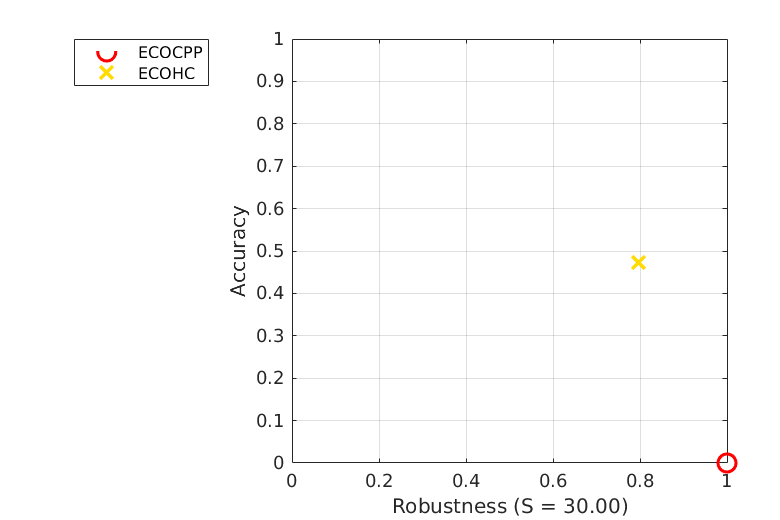
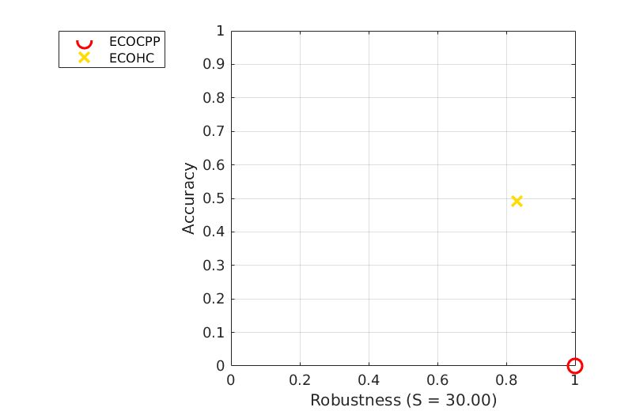
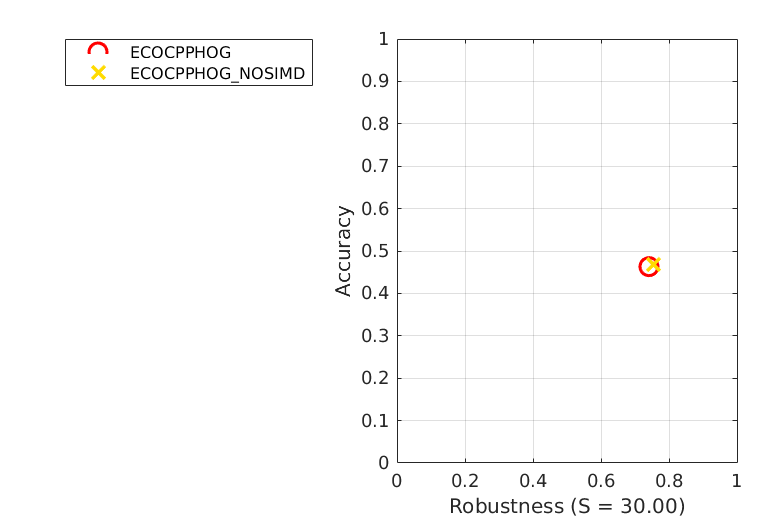
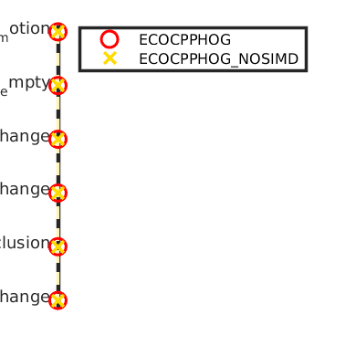
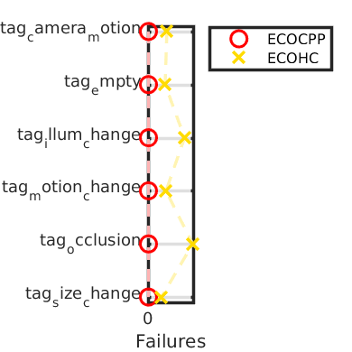
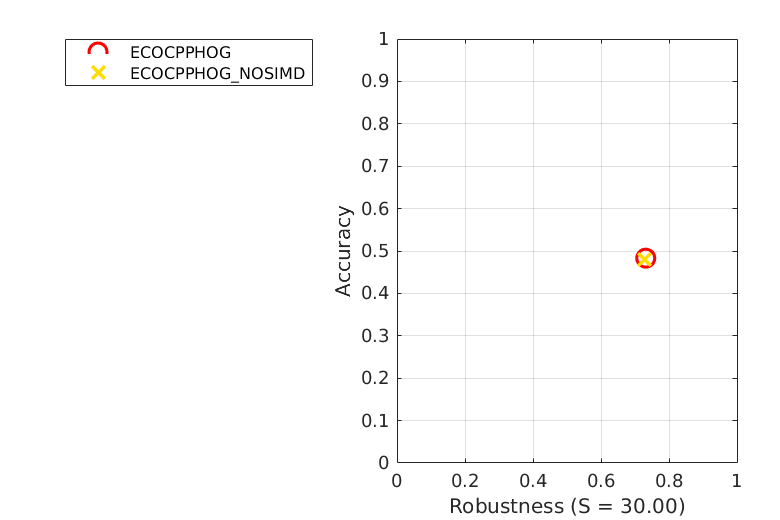
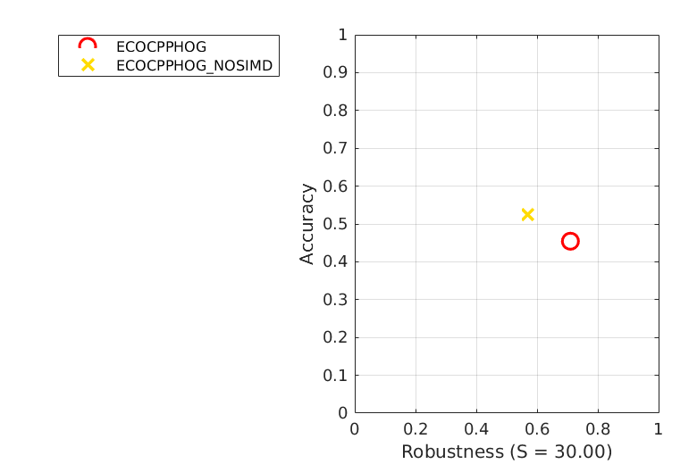
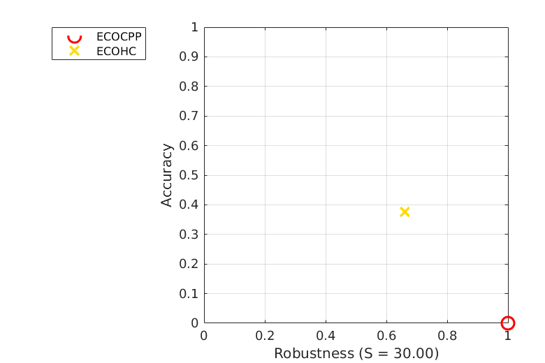
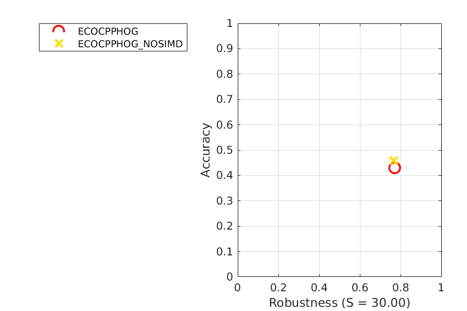

Accuracy-Robustness
Experiment baseline

AR plot for experiment baseline (mean)

AR plot for experiment baseline (weighted_mean)

AR plot for experiment baseline (pooled)
Accuracy
| | tag_camera_motion | tag_empty | tag_illum_change | tag_motion_change | tag_occlusion | tag_size_change | Mean | Weighted mean | Pooled |
|---|
| ECOCPPHOG | 0.48 | 0.46 | 0.45 | 0.45 | 0.38 | 0.43 | 0.44 | 0.46 | 0.46 |
|---|
| ECOCPPHOG_NOSIMD | 0.48 | 0.47 | 0.52 | 0.47 | 0.40 | 0.46 | 0.47 | 0.47 | 0.47 |
|---|
Robustness
| | tag_camera_motion | tag_empty | tag_illum_change | tag_motion_change | tag_occlusion | tag_size_change | Mean | Weighted mean | Pooled |
|---|
| ECOCPPHOG | 81.27 | 83.67 | 6.07 | 49.20 | 42.13 | 29.67 | 48.67 | 65.84 | 213.27 |
|---|
| ECOCPPHOG_NOSIMD | 82.33 | 65.40 | 10.00 | 55.40 | 46.47 | 30.47 | 48.34 | 61.67 | 200.73 |
|---|
Detailed plots

Orderings for overall overlap

Orderings for failures

AR plot for tag tag_camera_motion in experiment baseline
AR plot for tag tag_empty in experiment baseline

AR plot for tag tag_illum_change in experiment baseline
AR plot for tag tag_motion_change in experiment baseline

AR plot for tag tag_occlusion in experiment baseline

AR plot for tag tag_size_change in experiment baseline